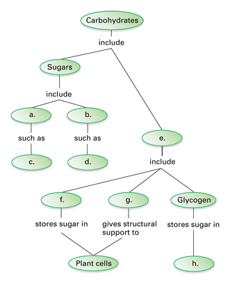
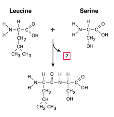
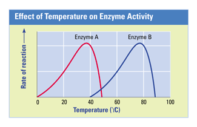

Reviewing Concepts
Multiple Choice
Choose the letter of the best answer.
1. Which of the following is not an organic molecule?
a. cellulose
b. sucrose
c. water
d. testosterone
2. Which of the following terms includes all the other terms on this list?
a. polysaccharide
b. carbohydrate
c. monosaccharide
d. glycogen
3. Which term is most appropriate to describe a molecule that dissolves easily in water?
a. hydrocarbon
b. hydrophobic
c. hydrophilic
d. organic
4. Cholesterol is an example of what kind of molecule?
a. protein
b. lipid
c. amino acid
d. carbohydrate
5. The 20 amino acids vary only in their
a. carboxyl goups.
b. side groups.
c. amino groups.
d. lipid groups.
6. A specific reactant an enzyme acts upon is called the
a. catalyst.
b. sucrase.
c. active site.
d. substrate.
7. An enzyme does which of the following?
a. adds heat to a reaction, speeding it up
b. lowers the activation energy of a reaction
c. cools a reaction, slowing it down
d. raises the activation energy of a reaction
Short Answer
8. Besides satisfying your hunger, why else might you consume a big bowl of pasta the night before a race?
9. How are glucose, sucrose, and starch related?
10. What are steroids? Describe two functions they have in cells.
11. How are polypeptides related to proteins?
12. How does denaturation affect the ability of a protein to function?
Visualizing Concepts
13. Copy the concept map below onto a separate sheet of paper, and complete it.

Applying Concepts
Analyzing Information
14. Analyzing Diagrams The reaction below shows two amino acids joining together.
a. One product of this reaction is represented by a question mark. Which molecule is it?
b. What is this kind of reaction called? Explain.
c. If an amino acid were added to this chain, at what two places could it attach?

15. Analyzing Graphs Use the graph to answer the questions below.
a. At which temperature does enzyme A perform best? Enzyme B?
b. Knowing that one of these enzymes is found in humans and the other in thermophilic (heat-loving) bacteria, hypothesize which enzyme came from which organism.
c. Propose a hypothesis that explains why the rate of the reaction catalyzed by enzyme A slows down at temperatures above 40°C.

Critical Thinking
16. Making Judgments Some food labels list the ingredient "partially hydrogenated vegetable oil." This means that hydrogens have been added to some of the double bonds in the oil's fatty acid chains. Does this make the food more or less healthful? Explain your answer.
17. Evaluating Promotional Claims You hear a television commercial claiming that a snack food is low-fat because it is made with vegetable oil. What may be misleading about this claim?
18. Developing Hypotheses Which of the three polysaccharides you learned about in this chapter is most likely found in paper? Explain.
19. Developing Hypotheses Many humans are lactose-intolerant, meaning they cannot digest milk products containing the disaccharide lactose. Hypothesize the reason behind lactose intolerance.
20. What's Wrong With These Statements?
Briefly explain why each statement is inaccurate or misleading.
a. The structure of a protein is like a long strand of yarn.
b. Enzymes provide activation energy for reactions.
Performance Assessment
Biology Research Project Research lactose intolerance and dietary solutions for lactose-intolerant individuals. Do any of the solutions relate to your hypothesis from Question 19? Write a report that summarizes your findings.